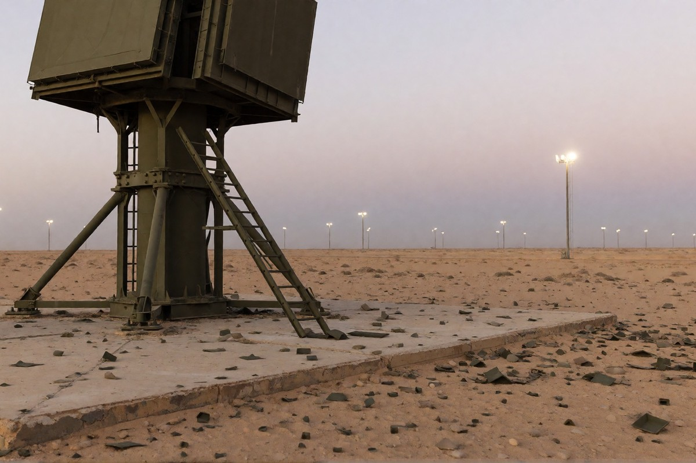

Cronaca · 27 novembre 2026
Kuwait, chi erano Antonio ed Emanuele. Roma indaga per omicidio

I due tecnici italiani uccisi da un attacco con droni in Kuwait avevano 65 e 36 anni e lavoravano per Rheinmetall Italia. La procura di Roma ha aperto un fascicolo per omicidio, i sindacati hanno proclamato otto ore di sciopero.
di Franco Zanghì
Si chiamavano Antonio Saccoccio ed Emanuele Lo Russo. Sono i due tecnici italiani morti giovedì 26 novembre 2026 in Kuwait, dopo un attacco con droni. Il giorno dopo hanno un nome, un'età e una città: Saccoccio aveva 65 anni, viveva a Formia ed era originario di Itri, in provincia di Latina; Lo Russo ne aveva 36 ed era di Roma.
Erano entrambi dipendenti di Rheinmetall Italia. Saccoccio era uno dei veterani dell'azienda, vicino alla pensione, con una lunga esperienza sui sistemi di difesa; Lo Russo lavorava per la società dal luglio del 2023. In Kuwait facevano la manutenzione delle antenne di rilevamento del sistema antiaereo Skyguard, in dotazione alle forze armate del Paese.
Che cosa è successo, e che cosa resta da chiarire
Secondo il ministero della Difesa kuwaitiano, le forze armate hanno rilevato droni ostili nello spazio aereo e sono intervenute per contrastarli: l'esplosione in volo avrebbe provocato la caduta di schegge e detriti sull'area, con feriti e danni materiali. Il comunicato, osserva l'AGI, non indica l'esito dell'intercettazione né il numero dei droni.
Il primo bollettino kuwaitiano parlava di quattro feriti: un kuwaitiano, due italiani e un pakistano. I due italiani sono poi morti. Il kuwaitiano, secondo La Capitale, è un capitano dell'esercito.
Su un punto le ricostruzioni non coincidono. La versione ufficiale è quella delle schegge cadute dopo l'abbattimento; Euronews riferisce invece una ricostruzione di Repubblica secondo cui un drone avrebbe colpito direttamente la postazione Skyguard mentre i tecnici erano sull'antenna. Il luogo esatto dell'esplosione non è stato reso ufficiale.
Chi ha lanciato quei droni
Il ministro degli Esteri Antonio Tajani ha sentito il collega iraniano Abbas Araghchi. Secondo il racconto di Tajani, Araghchi gli ha detto che il drone non è stato lanciato dalle forze armate iraniane e non è partito dall'Iran, e che Teheran è disponibile a una commissione d'inchiesta congiunta con Italia e Kuwait.
Riferendo al Senato, Tajani ha aggiunto che secondo gli accertamenti kuwaitiani si tratta di «un drone costruito in Iran», ma che resta da stabilire chi lo abbia lanciato: ci sono, ha detto, molte milizie legate a Teheran che usano questi apparecchi, e ha citato gli Houthi e fazioni filo-iraniane in Iraq.
L'ambasciata iraniana a Roma ha respinto categoricamente ogni responsabilità, e l'ambasciatore Ali Akbar Rezaei ha espresso pubblicamente le condoglianze alle famiglie e al governo italiano. Il portavoce delle forze armate iraniane, il generale Abolfazl Shekarchi, ha parlato di una possibile operazione sotto falsa bandiera di Israele e Stati Uniti. Nessuno, al momento, ha rivendicato l'attacco. Il Kuwait ha convocato l'ambasciatore iraniano Mohammad Totonchi per consegnargli una nota di protesta.
L'inchiesta a Roma e lo sciopero
Venerdì 27 novembre la procura di Roma ha aperto un fascicolo per omicidio, coordinato dal procuratore capo Francesco Lo Voi: l'obiettivo è ricostruire la dinamica e accertare eventuali responsabilità penali.
Nella sede romana di Rheinmetall, a Settecamini, si è tenuta un'assemblea in sciopero indetta dalla Fiom-Cgil. Al termine, Cgil e Fiom-Cgil di Roma e del Lazio hanno proclamato otto ore di sciopero da tenersi nel giorno del rientro delle salme, data non ancora fissata. Il sindacato chiede il rientro dei lavoratori dalle aree più esposte e domanda perché il Kuwait fosse classificato a rischio medio: «Non ci sono protocolli o procedure di sicurezza» in grado di assicurare l'incolumità in territori di guerra.
Secondo la Fiom, l'azienda ha garantito il ritiro delle squadre attualmente in Kuwait e il rientro del personale in Italia nel più breve tempo possibile; decine di dipendenti hanno già chiesto di tornare. Rheinmetall si dice sconvolta per la perdita di due colleghi stimati.
La Farnesina ha attivato l'Unità di crisi e l'ambasciata d'Italia in Kuwait per l'assistenza e il rimpatrio delle salme, i cui tempi dipendono dal completamento degli accertamenti. Il presidente della Regione Lazio, Francesco Rocca, si è stretto alle famiglie e alle comunità di Formia e Roma. A Itri il sindaco Andrea Di Biase ha proclamato il lutto cittadino per il giorno dei funerali; a Formia il sindaco Gianluca Taddeo ha disposto le bandiere a mezz'asta.
Come la vedo io
Ieri avevo detto che non erano soldati. Oggi hanno un nome, un'età, una città: un uomo a un passo dalla pensione e un uomo di 36 anni. Se l'Iran è davvero pronto a un'inchiesta congiunta, la si faccia subito e sul serio: le famiglie hanno diritto alla verità, non a una partita di accuse fra governi. E la domanda della Fiom merita una risposta senza slogan: se nessun protocollo basta, chi decide quando un tecnico resta e quando torna a casa?
Fonti
- ANSA, «Attacco con droni in Kuwait, morti due tecnici italiani», 26 novembre 2026
- AGI, «Kuwait: morti 2 tecnici italiani che intercettavano droni da Iran», 26 novembre 2026
- Tgcom24, «Saccoccio e Lo Russo, chi erano i due tecnici», 26 novembre 2026
- Tgcom24, «La Procura di Roma apre un'inchiesta», 27 novembre 2026
- Euronews Italia, «Cosa sappiamo dell'attacco e cosa resta da chiarire», 27 novembre 2026
- Adnkronos, «Tajani: drone costruito in Iran», 27 novembre 2026
- La Capitale, «Inchiesta per omicidio, otto ore di sciopero», 27 novembre 2026
- Dire, «Oggi sciopero alla Rheinmetall di Roma, bandiere a mezz'asta a Formia», 27 novembre 2026
- Alanews, «Rheinmetall ritira le squadre», 27 novembre 2026
- Fanpage Roma, «Lutto cittadino a Itri per Antonio Saccoccio», 27 novembre 2026
Dati provvisori alla data di pubblicazione. Sulla dinamica le fonti non coincidono: la versione del ministero della Difesa kuwaitiano parla di droni contrastati in volo e di schegge cadute sul sito, mentre una ricostruzione di Repubblica riferita da Euronews indica un impatto diretto sulla postazione. Il primo bollettino kuwaitiano parlava di quattro feriti, bilancio poi diventato due morti e due feriti. L'ipotesi di un'operazione sotto falsa bandiera è una dichiarazione iraniana e non ha riscontri indipendenti nelle fonti lette; l'agenzia Fars ne ha avanzata una terza versione, anch'essa senza riscontri, che qui non viene riportata. Nessuna rivendicazione risulta alla data di pubblicazione.